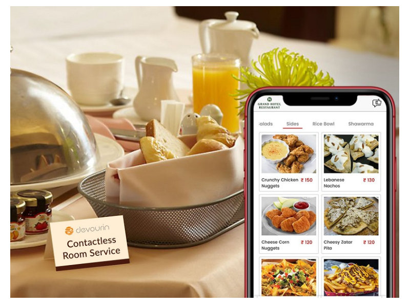

Articles
Devourin's Contactless Technology May Be the New Normal for Hotels and Restaurants Post Lockdown
Last Updated: May 19, 2020, 12:40 PM IST

As the hospitality industry prepares to welcome its patrons back after the COVID 19 situation recedes, a ‘new normal’ is introduced encouraging social distancing and taking contactless technology from Devourin to a centre stage.
The coronavirus pandemic has managed to confine a large number of people to the safety of their homes, crippling the thriving business of all hotels across the country. When the worst of this situation passes, life will return to normalcy but scepticism about the safety of travel and stay will dictate the pace at which business returns to pre-lockdown levels. The fear of infection will impact people’s decision to step out of homes.
Deepak Nathani, Managing Director, Devourin, who is also the former COO and Co-founder of Cybage Software, explains “The hospitality industry is suddenly grappling with the unprecedented impact of COVID 19. There is a need for a completely new approach to regain the confidence of guests. Spark from Devourin, a suite of touchless ordering solutions is a perfect solution and the true need of the hour”.
Peter Burke joins Cybage board
Last Updated: Sep 17, 2019, 03:35 PM IST
Product engineering firm Cybage today announced the appointment of industry veteran Peter Burke to its Board of Directors. A software industry veteran experienced in Information services, telecommunications and video systems, Burke holds a PhD in Artificial Intelligence from the University of Strathclyde, Glasgow. He has served at executive level positions with firms like IBM, Ceon Corp, ARRIS Global Video Systems and Neustar.
“We are pleased to welcome Peter to the Board. With his long-standing experience in managing large teams and handling scalable businesses, Peter is a revered industry professional whose research work has propelled the field of technology solutions to new heights.” said Arun Nathani, MD & CEO, Cybage. “Peter’s valuable experience in artificial intelligence will complement Cybage’s data driven solutions leading to consistent success in the future.”
Peter Burke said, “Cybage emerged as a global leader in the product engineering and technology outsourcing field supported by its varied and impressive clientele. As part of my role in Cybage, I look forward to combining my technological and managerial expertise to strengthen Cybage’s footprint in the dynamic global techno-scape.”